Most breakfast nooks fail the same way. They photograph well and then pinch your knees, because the table is too big, the bench is too soft or the chair cannot pull out.
Fix it with numbers before you add a single pillow. Seat height, table size, walkway and light height decide whether anyone sits there.
These 33 nooks cover tables, benches, windows, lights and color, each with a measurement you can take straight to your own corner. Read the five rules first.
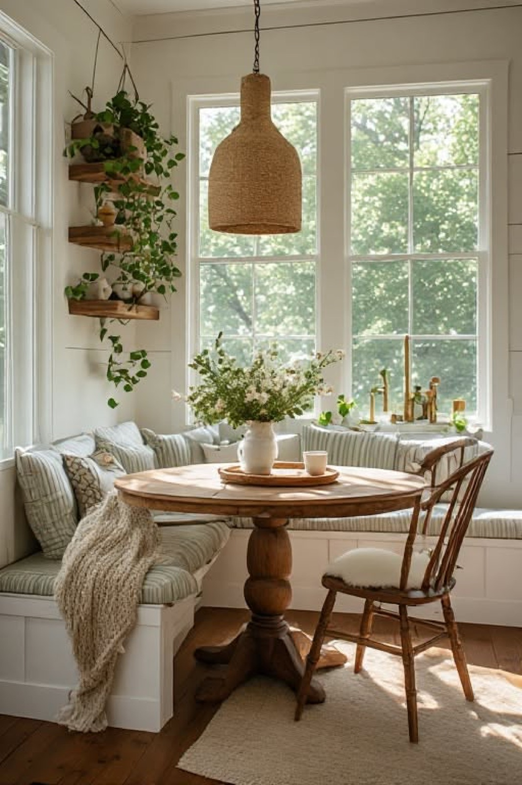
Five Rules for a Nook You Will Use
- Set the seat at 17 to 19 inches and the table at 29 to 30. Get those two numbers right and the rest is decoration.
- Plan 24 inches of table edge per person. A 36-inch round table seats two comfortably and four tightly.
- Leave 36 inches behind every chair that pulls out. Less than that and the nook becomes an obstacle between the stove and the fridge.
- Hang the light 30 to 36 inches above the tabletop. Lower blocks faces across the table, and higher leaves the tabletop dim.
- Choose a firm, wipeable bench cushion. Two to three inches of high-density foam in a washable cover survives crumbs and coffee.
Tables That Fit the Footprint
1. Choose a 30-Inch Round for a Tight Corner
Tight corner? Skip the bench for four and use a 30-inch round table with two chairs. The pedestal base leaves knees free, as in this corner with windows on two sides.
Keep tall things away from the glass. A small shelf with one plant hangs on the wall beside the window here, so the view stays clear.
A round rug that sticks out 24 inches past the table lets the chairs slide without catching an edge.
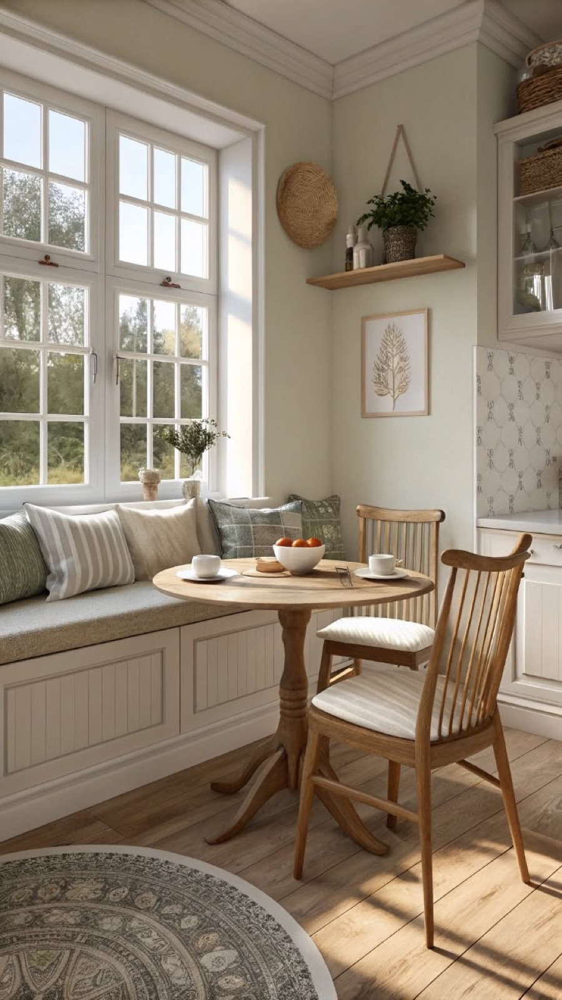
2. Use a Coffee-Sized Table
You do not need a dining table to have a nook. A round table 24 inches across holds a cup and a newspaper, as beside this narrow bench.
Cover the pillow in washable linen in a muted blue or sage, and wash it weekly.
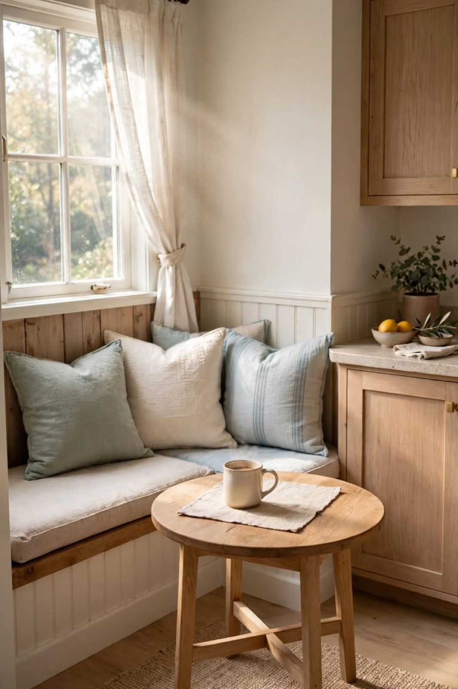
3. Pick a Pedestal So Nobody Straddles a Leg
A white pedestal table keeps the middle of the nook open, because nobody has to straddle a leg. Wishbone chairs, like these, tuck in fully so the walkway stays clear.
Under a round table, lay a round rug at least 24 inches wider than the top, so the chair legs stay on it when you push back.
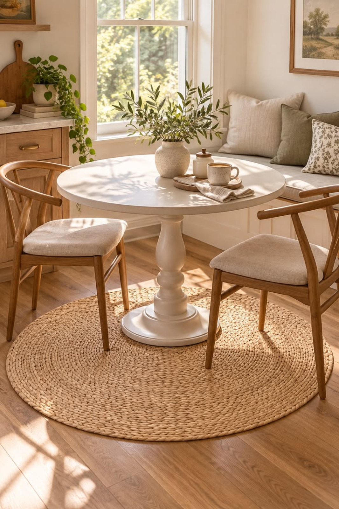
4. Squeeze a Nook Into an Apartment
A tiny apartment can have a nook. Fit a table 24 inches wide, a slim bench and two chairs against a window and call it breakfast.
Track lights can be aimed, so they reach a table that sits off-center in the room.
Metal chairs and a brick wall are hard surfaces. A seat pad and a back cushion soften both.
Hang prints on brick with masonry clips, not nails.
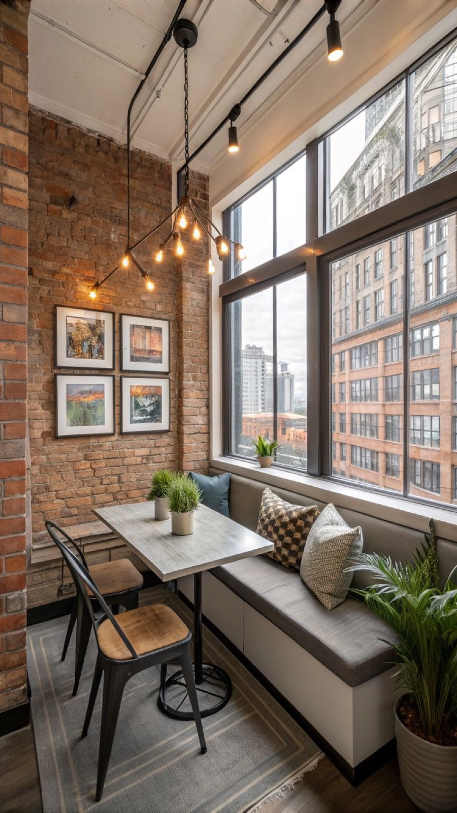
5. Run a Straight Bench Along the Long Wall
A long, narrow wall suits a straight bench with chairs opposite. It seats four in a small footprint.
Keep the table about 30 inches wide, as in this room, so the aisle stays open.
A striped back cushion gives a plain wall some rhythm, and sconces on each side of the picture add light without using table space.
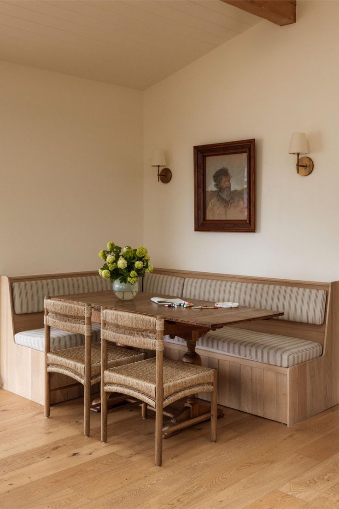
6. Seat More at a Trestle Table
X-leg and trestle tables seat more people than a pedestal, because the legs sit at the ends. This farmhouse table suits a family that eats in shifts.
A table 60 inches long seats two comfortably on each side and one more at each end.
Swap the pillows with the season. Cushions are the cheapest way to change a nook.
Woven baskets beside the bench catch napkins and placemats.
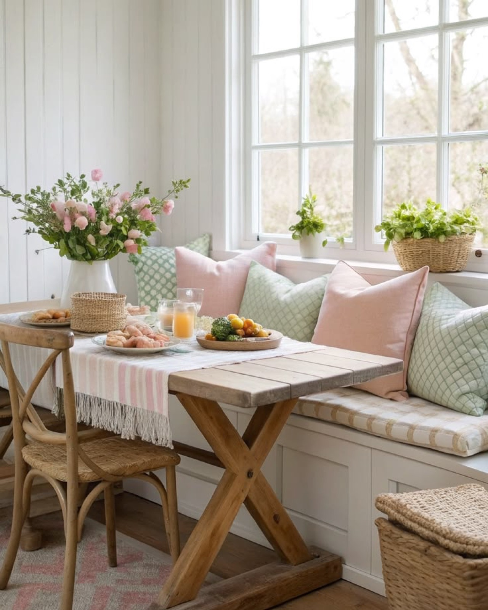
Benches That Earn Their Space
7. Hide Storage Behind the Bench Front
A bench that only holds people wastes its best feature. Build or buy one with lift-up lids or drawers behind a paneled front, like this white base.
Store table linens and seasonal dishes inside, and put the opening on the side that faces the room so you can reach it without moving the table.
Fit lid stays so a lid cannot slam on fingers.
Shelves by the window hold plants and keep the tabletop clear.
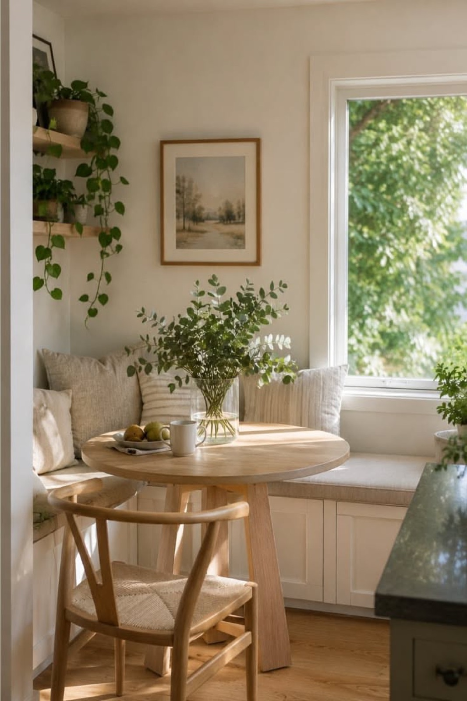
8. Pick Drawers Over Lids
In a tight nook, drawers beat lids because nothing has to come off first. This bench has a pull-out drawer at the end that holds cookbooks and placemats.
Choose a deep green cushion with a few neutral pillows to keep the corner calm.
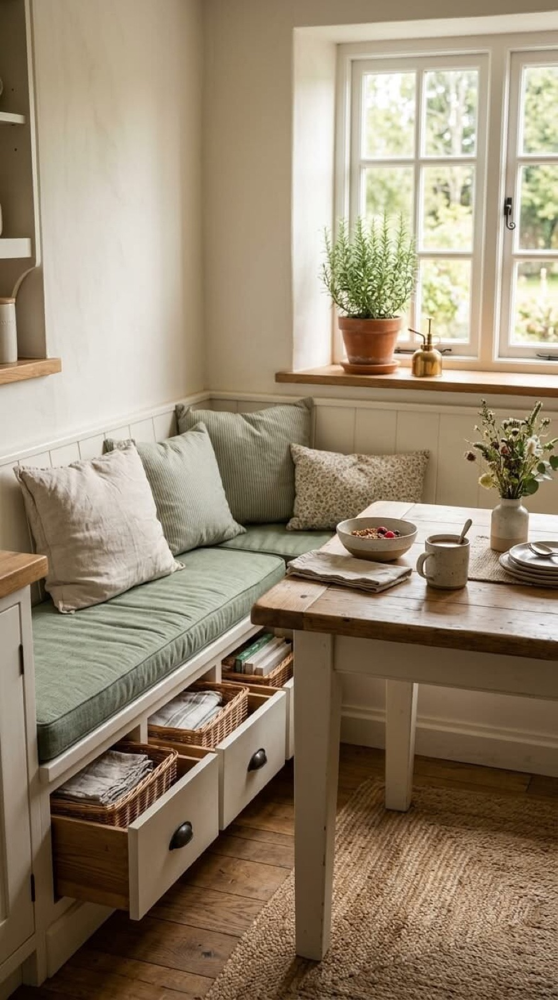
9. Fake a Custom Bay Bench
Custom benches fit bay windows best, but a curved cushion on a plywood base gets close for far less.
Hold the seat height at 18 inches and add a thin back cushion, as here, so people stay at the table longer.
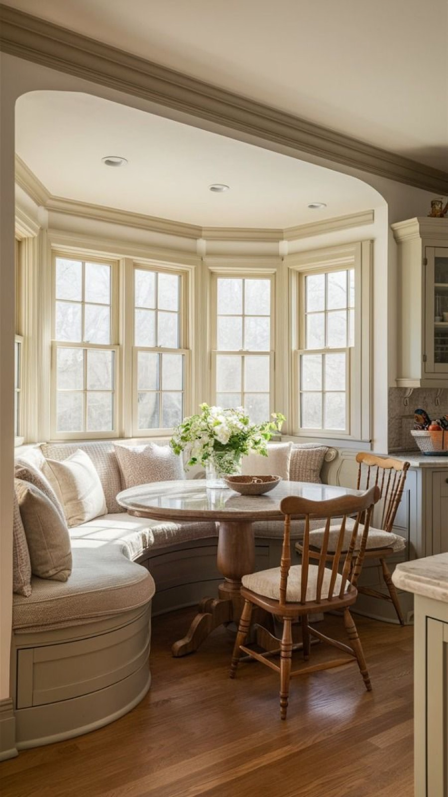
10. Wrap a Curved Bench Around the Table
A round table and a curved bench waste no corner. The bench follows the wall and the pedestal base leaves knees free.
Mount two or three narrow shelves by the window for plants, as here. The greenery frames the view and takes no table space.
Fold a knit throw over the end of the bench for cold mornings.

11. Float Corner Shelves Over the Table
Floating corner shelves turn a bare wall into storage. Stagger the heights and keep each shelf about 10 inches deep.
Display what you use, like the bread and books here. Things you reach for daily stay handy and do not collect dust.
Screw the brackets into studs or use rated anchors. Books and crockery are heavy.
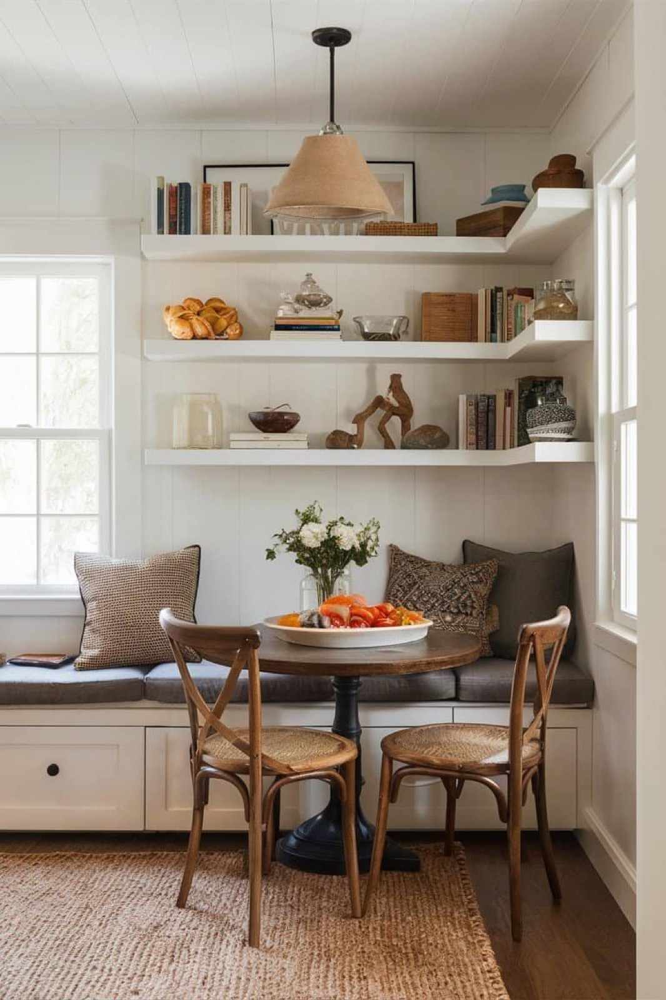
Windows, Sun and Open Kitchens
12. Hang Sheers Outside the Bay Frame
A bay is the best nook location, so do not block it. Hang sheers outside the frame so they dress the view without covering glass.
A pendant fixes the light at night. For a bay this size, choose a shade 12 to 16 inches wide.
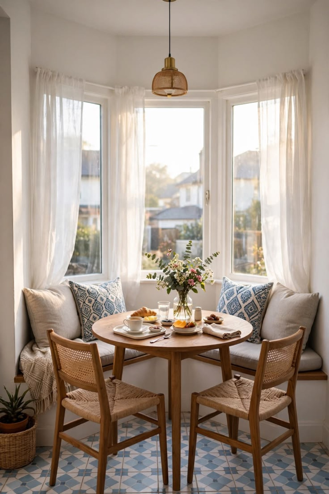
13. Keep a Breakfast Tray Ready
Make the nook the place you start the day by keeping it ready. A tray with cups, plates and napkins beats clearing the table every morning.
Leave a throw on the bench for cold mornings, as here.
Keep the vase small enough to move, so it never blocks a seat.
Pick a tray with handles so you carry everything in one trip.
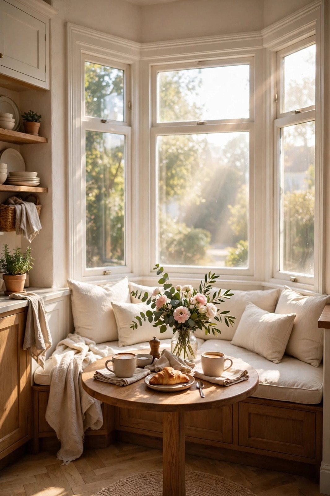
14. Shade the Sunniest Nook
Sun is lovely until noon. If your nook gets full light, like this glass-roofed room, add a roller shade or you will end up eating in the shade of a plant.
Rattan chairs are light enough to move when you need space, and the cushions swap easily.
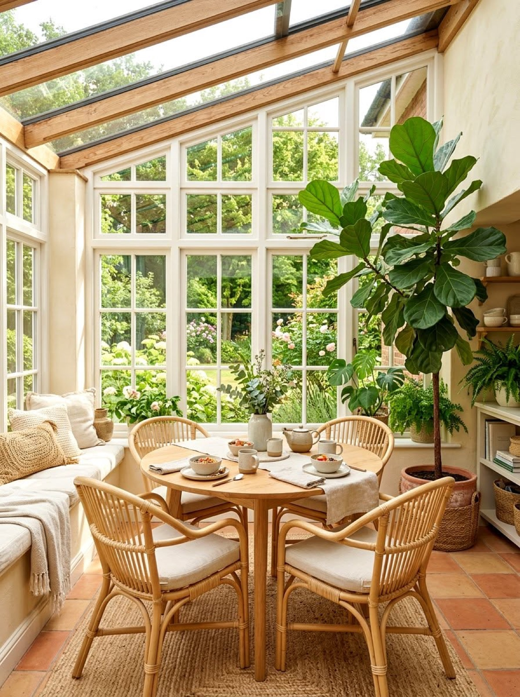
15. Go Coastal With Rough Textures
Coastal nooks can handle rough textures. Pair a whitewashed wood table with blue-striped cushions and a woven pendant.
Choose outdoor-rated stripes. Sun and salt air fade ordinary cotton quickly.
Sand any raw driftwood edges and seal the top so it wipes clean.
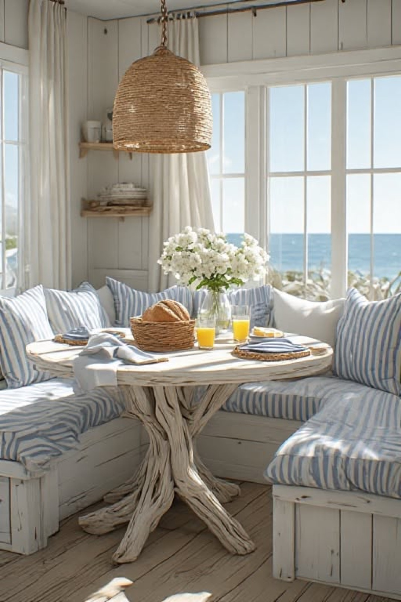
16. Line Up the Nook With the Island
When the nook sits beside an island, line up the table with the island edge so traffic keeps moving.
A woven pendant softens a hard stone floor like this one, and a rug beneath the table cuts echo.
Keep 36 inches between the island and the chairs.
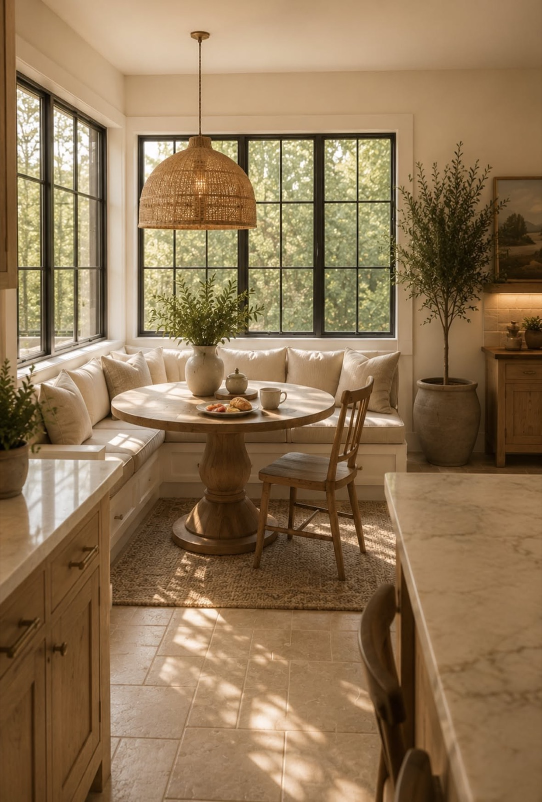
17. Match the Table to the Counters
If the nook is part of an open kitchen, match the table to the counters so it does not look like it landed there. This marble top echoes the white counters.
A jute rug under the table anchors the area and sets it apart from the kitchen floor.
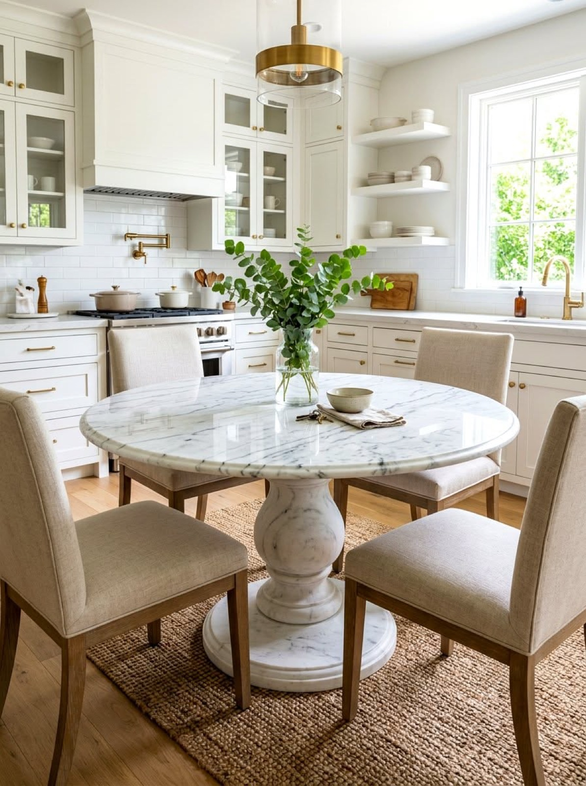
Light Over the Table
18. Light the Bench With Sconces
Wall sconces on both sides of a window light the bench and free up the tabletop. Use plug-in versions if you cannot open the wall.
A woven Roman shade filters morning light so you can eat without squinting.
Hang the sconces about 60 inches from the floor so the bulb sits above eye level when you sit.
Add a cafe curtain along the lower sash for privacy while the top stays open.
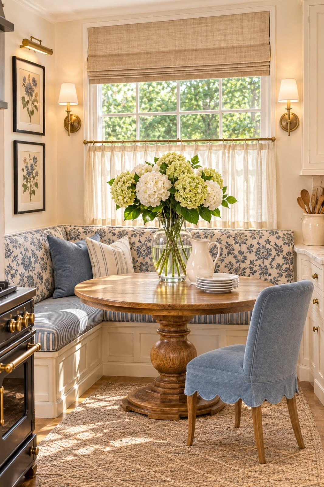
19. Choose a Shade That Wipes Clean
A pendant sets the mood. Choose a ceramic or glass shade, like this enamel one, and hang it so it feels intimate but tall guests do not hit it.
Center it over the table, not over the room.
Fit a dimmer. Breakfast and a late cup of tea need different brightness.
Enamel and glass wipe clean. Kitchen steam leaves a film on fabric shades.
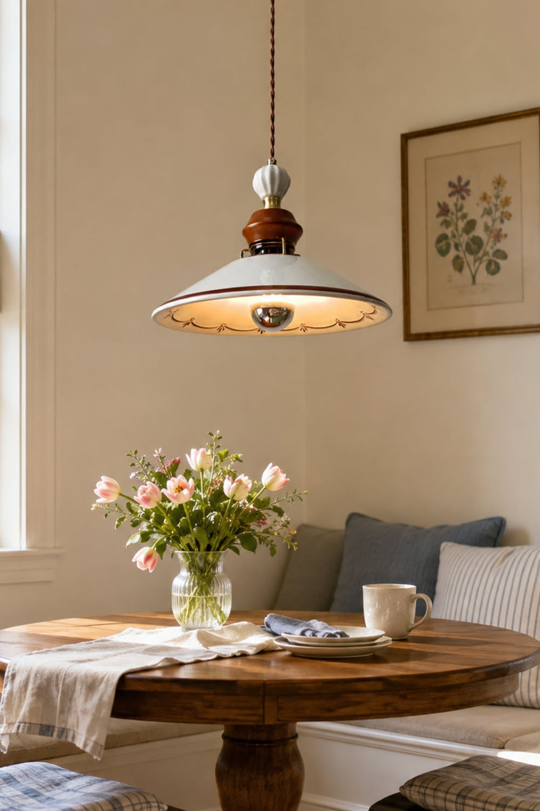
20. Warm the Corner With a 2700K Bulb
Soft window light plus a warm bulb makes a nook glow in the evening too. Use a 2700K bulb in the pendant.
Hang a linen curtain slightly wider than the window, as here, to make the window look larger.
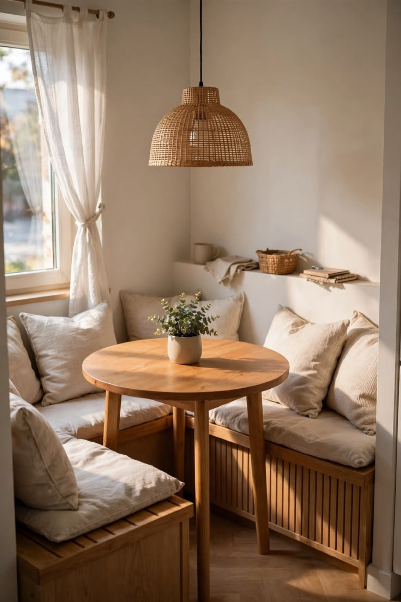
Sage, Green and Wood Walls
21. Paint the Bench Base Darker Than the Wall
Paint the bench base a deeper shade than the wall and the nook looks built in, even if it is not. The base here is sage, one step darker than the wall.
A tulip table with a black base looks sharp against sage and keeps legs out of the way.
Use satin or semi-gloss on a bench base so scuffs wipe off.
Cane chairs add a light texture that does not compete with the paint.
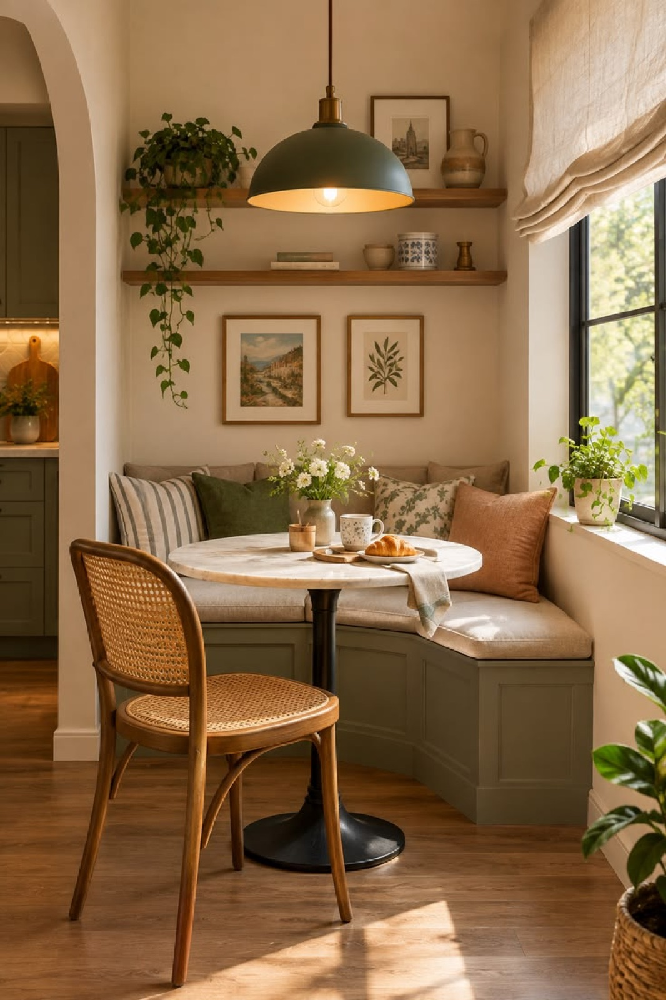
22. Split the Wall in Two With Paneling
Wainscoting adds depth fast. Paint the top sage and keep the lower panel white, as here.
A marble-top table wipes clean in seconds, but use placemats to protect it from acidic juice.
Choose one metal for the sconce and the pendant. Both are brass in this room.
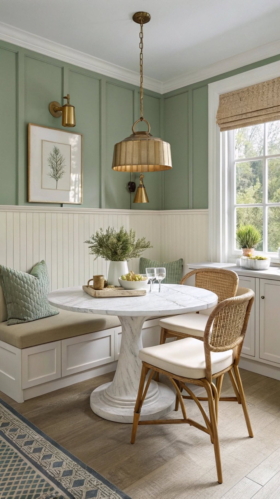
23. Hang a Thrift-Store Landscape
Old paintings give a nook character for little money. A thrift-store landscape in a dark frame suits sage walls like these.
Hang art with its center about 57 inches from the floor, and a little lower in a seated space.
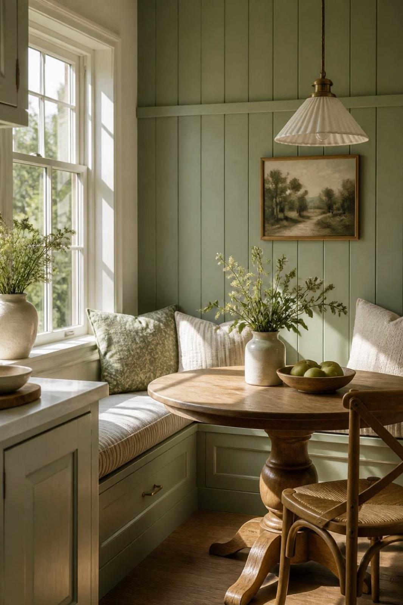
24. Put One Wood Wall Behind the Bench
One wood wall changes a whole nook. Plank paneling costs less than tile and wipes clean with a damp cloth.
Seal reclaimed boards with a matte polyurethane so crumbs and steam do not stain them.
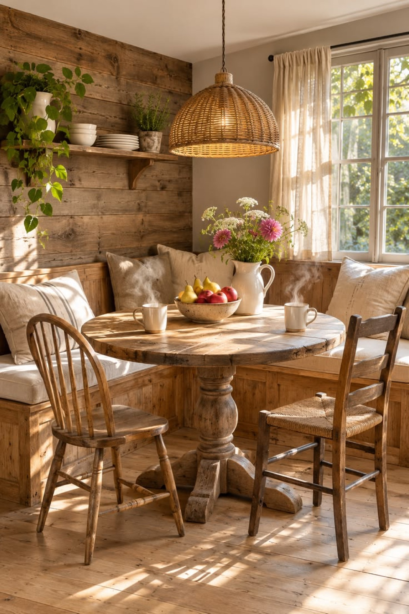
Pattern, Print and Texture
25. Paper the Small Wall
Wallpaper suits a nook because the area is small. One or two rolls cover it, and a pattern feels intentional.
In a kitchen, choose a scrubbable or vinyl-coated paper. Steam and splatter ruin plain paper.
A floor-length cloth hides the table base and the clutter under it, as on this table.
Pick up one color from the paper in a single object, like the sage in the jug.
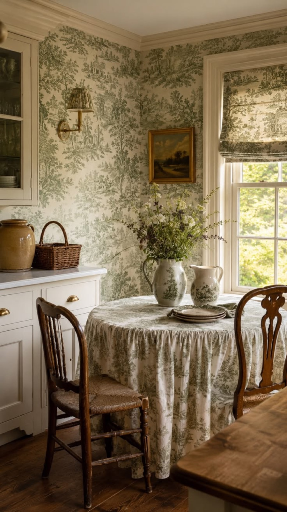
26. Hang Botanicals in a Grid
Botanical prints in matching frames look curated. Hang them in a grid with 2 inches between frames, as here.
Trailing ivy along the window frame adds living green. Check its water and light needs before you commit, since ivy likes bright, indirect light.
Dark window frames against pale walls give strong contrast, so keep curtains off them.
Keep the print group no wider than the bench so it looks anchored.
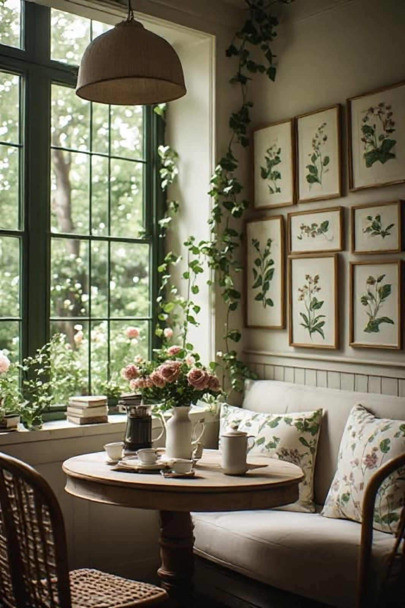
27. Use One Big Graphic Print
A dark table and a big graphic print give a nook a modern edge. Here a navy table sits under a blue-and-cream print.
Warm the palette with rust chairs and a striped rug.
Choose a rug with a narrow stripe. It hides crumbs, and a solid color shows every one.
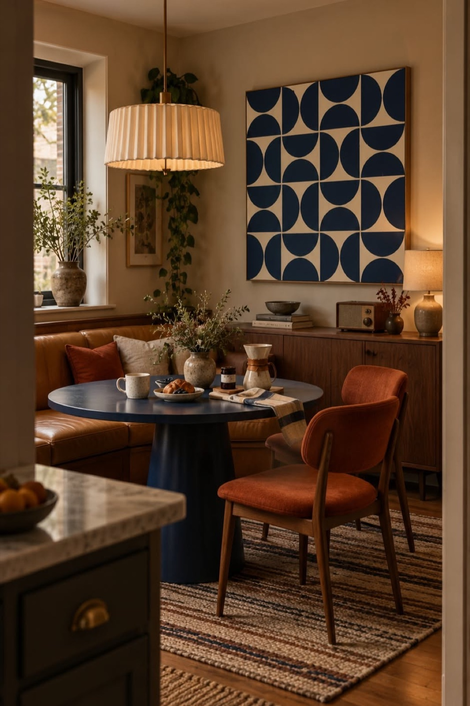
28. Stay With One Gingham Color
Gingham is the classic cafe look, and one color is plenty. Red-and-white curtains and matching bench cushions make it a theme.
A black pendant keeps the look from turning too sweet.
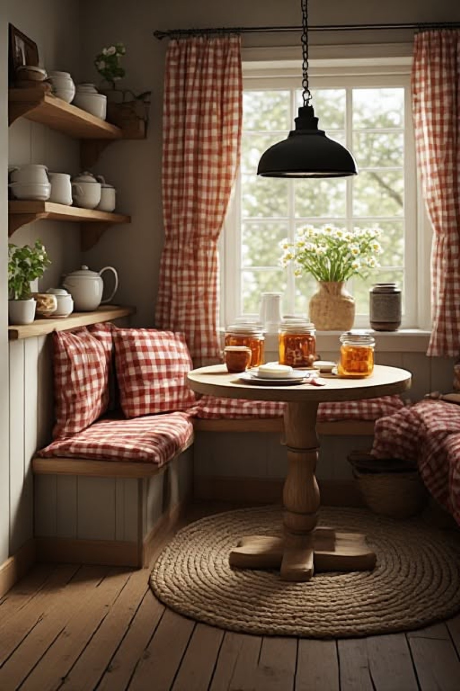
29. Mix Toile and Stripes
Mix blue-and-white toile with stripes and the nook looks collected, not matched. Keep the scale of each pattern different.
A small chandelier adds drama in a corner. Check that the ceiling is at least 8 feet high first.
Choose candle-style LED bulbs. A chandelier at full strength is very bright over a small table.
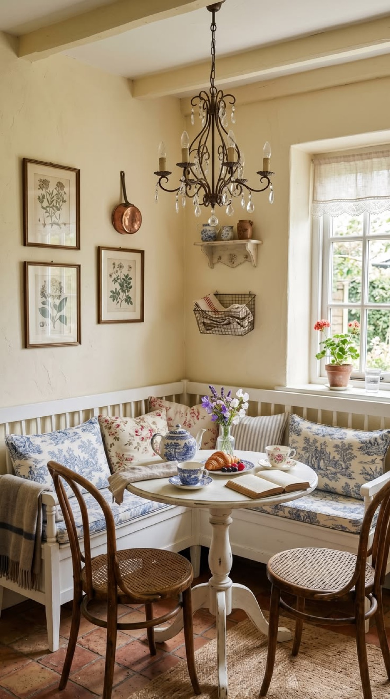
30. Keep Blue and White Spill-Proof
Blue and white is the safest nook palette, because it hides spills. Mix a stripe, a small print and a solid.
A rattan chandelier above the table, like this layered one, adds texture without adding color.
Floral curtains bring a third pattern. Keep them in the same blue family.
Paint the bench white in semi-gloss so scuffs wipe off.
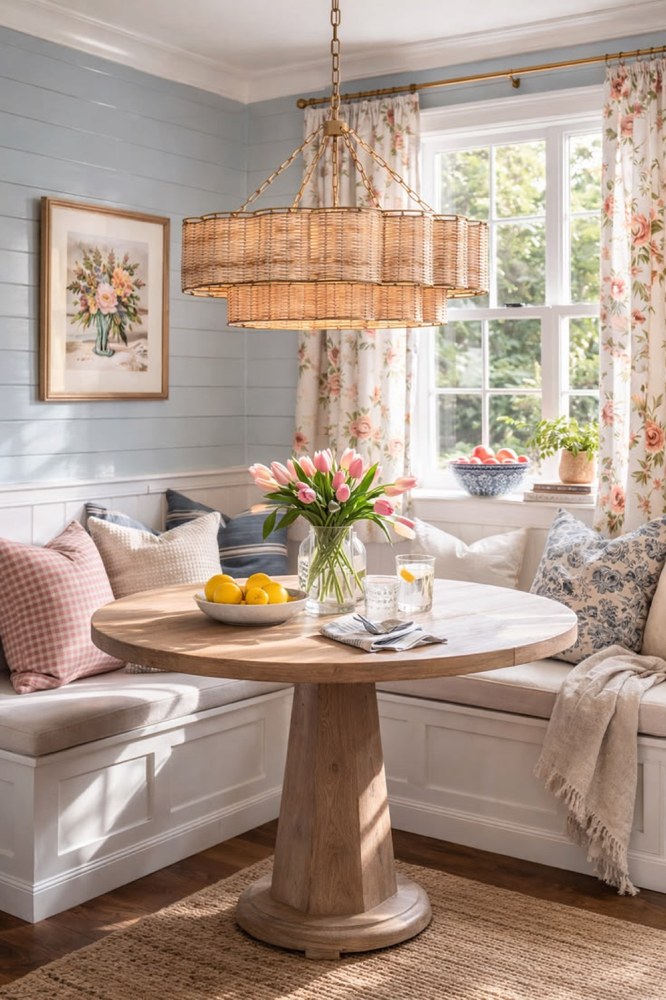
31. Warm a White Base With Plaid
A plaid bench pad warms up a white base. Pick a pattern with a mix of warm tones so it blends with wood.
Use a spindle-back chair opposite the bench. It is slim and easy to move.
Cut the pad to the exact bench length so it does not slide.
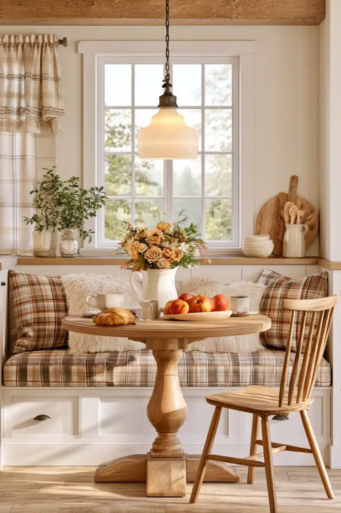
32. Layer Texture in a Neutral Nook
A neutral nook looks rich when you layer texture: linen curtains, a woven cushion and a stoneware bowl, as here.
Upholstered chairs are comfortable, but choose a performance fabric so spills wipe off.
Spray new fabric with a stain-resistant treatment before the first meal.
Keep the palette to three shades, such as cream, oak and one muted green.
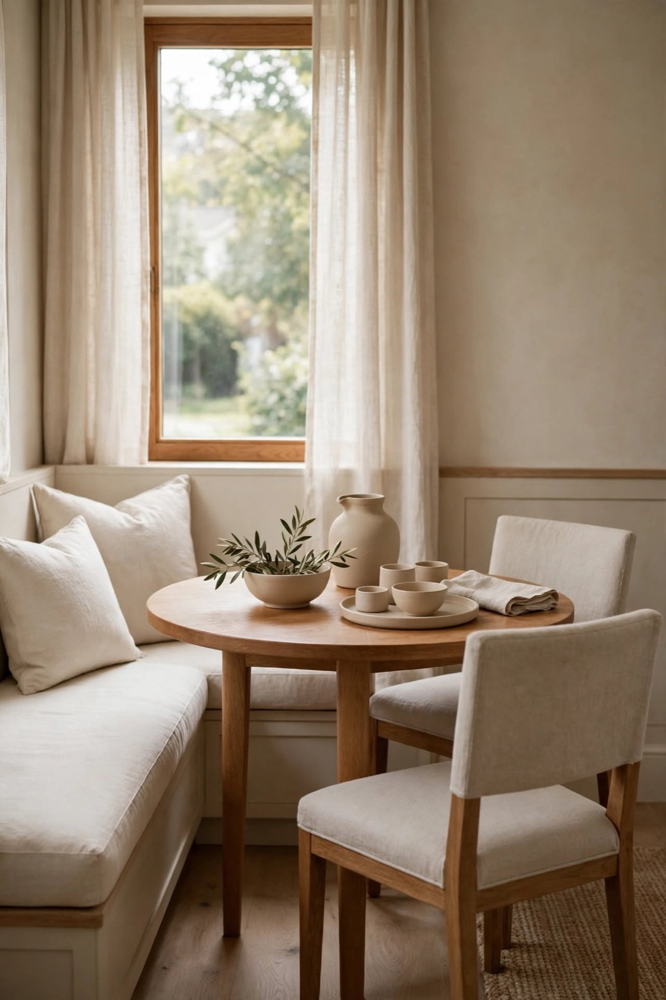
33. Lay a Flat-Weave Rug
Round rugs suit round tables. Choose a flat-weave jute, because deep pile traps crumbs and catches chair feet.
This alcove uses a round jute rug under a pedestal table, with floral pillows on the bench.
Shake the rug out weekly and rotate it so wear stays even.
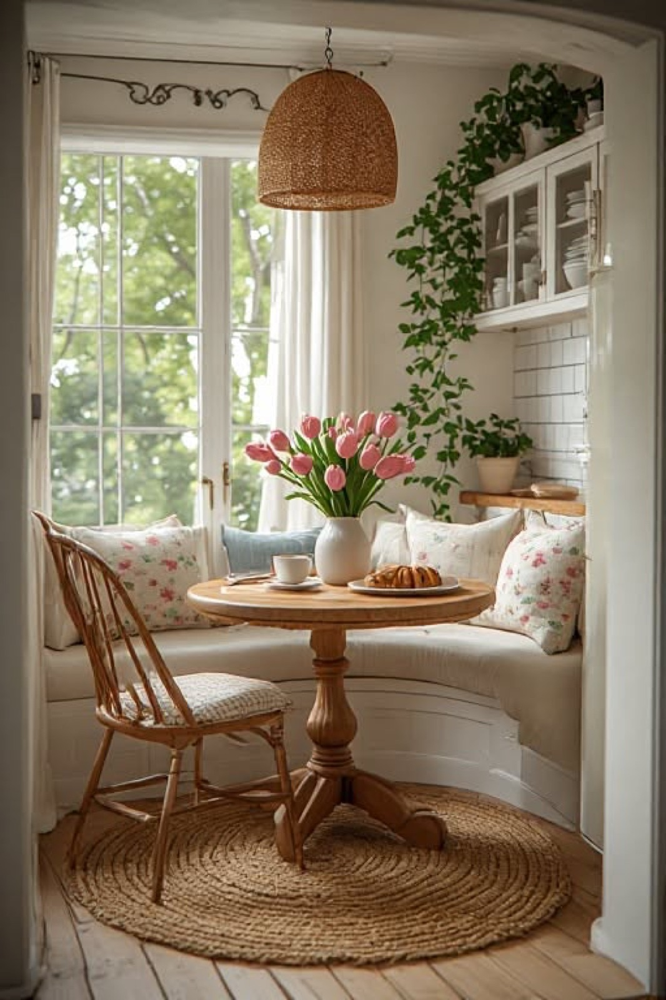
Common Mistakes (and Fixes)
- Mistake: a table too big for the floor. Fix: measure first and keep 36 inches between the table and any wall or counter.
- Mistake: a soft, deep cushion. Fix: use firm foam 2 to 3 inches thick in a removable cover you can wash.
- Mistake: hanging the light too high or too low. Fix: set the bottom of the shade 30 to 36 inches above the table.
- Mistake: skipping storage. Fix: choose a lift-top bench or drawers so the nook holds what you use.
- Mistake: delicate fabric on a sunny bench. Fix: pick performance or outdoor-rated fabric that handles spills and sun.
Where to Start
Measure the corner, tape the table footprint on the floor and sit in it for a minute. If the space feels roomy, the rest is easy.
Then add a light, a plant and something soft to sit on, and breakfast will move there by itself.